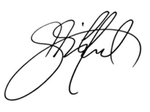

New Horizons Same Promise: It’s been a while since I’ve blogged here. I’m happy to say that it’s finally time to unveil the real reason why.Redsqware has come a long way in five years.
It all began with a simple goal. To be an adaptive, reliable technology partner for our clients and team members. After years of handling development from the agency side, we realized that we’d developed a circle of partners, team members, and SMEs that was a great deal more than the sum of its parts. We had also proved ourselves, time and again, with more than a decade of successful technology development and support on the agency side. We were trusted by people we worked with – and for – because we didn’t hesitate to put their needs ahead of our own when the chips were down.
And the chips were down quite often. Our clients tended to come to us with challenging custom development projects that were beyond the reach of either an agency or a development services company alone. To deliver on those demanding requirements, we gradually built a bridge between the two. Along the way, we developed and nurtured a valuable network of people, partners, and methodology from around the world. We also built a stable of amazing, brilliant clients, and were lucky enough to become a trusted partner for some very large multinational concerns. That wasn’t a painless process, and I learned as much from our failures as from our successes. Maybe more. No matter what, I’ve always believed in keeping promises. To me, upholding the trust we’d earned from our staff and our clients came first. Eventually, we also learned to balance code, cost, and compliance effectively – and even started turning a profit.
Creating a new company to leverage what we’d learned was just a natural extension of that evolution. I felt that for any new company to be a viable enterprise in the long-term, it had to be a bootstrap endeavor. Looking back, that was the smartest decision we made. It forced us to evolve to better align with what our clients needed. But it also meant that we had to watch as other companies burned bright and faded away – or actually succeeded, in a few cases. All the while, we kept our eyes on the road in front of us. Not the one they were taking. And worked. And worked. And worked.
We waded in with open source CMS development, then licensed software. Soon we were being asked for mobile apps, UX, documentation, and pretty much anything else that would fit under a fixed fee. The slow burn approach kept us honest, but it also required a lot of my life energy. There were many times when we took a beating financially so that we could make sure a client was happy. We truly used client successes as our yardstick for success, rather than immediate profit.
I feel very, very privileged to have clients and team members who believe in what we do at Redsqware. Every day, I’m reminded of that in some way. Because there is no secret to our success. It’s all about people, and hard work. Still, I know we’ve been extremely fortunate. I know that by some estimates, as many as 75% of new companies fail. And yet today, we continue to narrow and sharpen our edge.
The truth is, I would not be here writing this without those amazing people, who have walked with me on every step of our journey. When we need input, they never fail to humble me with their generosity and sincerity. With customer feedback, employee dedication, and constructive criticism. Time and again, they’ve sustained us with invaluable capital, resources, and insights – and honored me with their trust.
As we once again shed our cocoon, stretch our wings, and look to new horizons, I offer them my deepest gratitude.
Cheers,
Jon Gifford
jgifford@redsqware.com
After more than 21 years of experience in the digital marketing and advertising industries (including some painful learning experiences in the tech startup game) I co-founded Redsqware in early 2012. Having searched at great length (and without success), we decided to just give up – and became the kickass agency development partner we'd always wanted for ourselves. Our goals were threefold: to uplift our clients, to empower our people, and to put extraordinary tools within the reach of anyone. My philosophy is that given time, quality work and great service will always rise to the top. I believe that doing right by customers and employees is always the right thing to do. I loathe chest beating of any kind, but I love innovation – and the people all around us who drive it. I believe wholeheartedly that the more open the web is, the better off we'll all eventually be. I don't have an autonomous car, but my pickup truck is old enough to drive itself. I'm a father to three amazing kids, and a husband to a wonderful woman. In my free time I can be found wandering the beaches of either coast in search of waves and new friends; or prowling the streets of Philadelphia looking for our family's next dog rehab project.
Our spines were made to move, and in turn so were the rest of our bodies. Exercise,
February 25, 2014
Our spines were made to move, and in turn so were the rest of our bodies. Exercise,
February 25, 2014
Our spines were made to move, and in turn so were the rest of our bodies. Exercise,
February 25, 2014
Our spines were made to move, and in turn so were the rest of our bodies. Exercise,
February 25, 2014
Our spines were made to move, and in turn so were the rest of our bodies. Exercise,
February 25, 2014
Our spines were made to move, and in turn so were the rest of our bodies. Exercise,
February 25, 2014